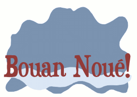

Moussieu l'Editeu,
La Merrienne ne veur pas craithe que ch'est Nouë. "Je n'me fiche pas mal de l'Almanac des Chroniques," ou s'fit hier au sé, "je n'peux pas m'pérsuadé qu'un an a pâssé dé pis que j'fûmes siez l'John et sa Elsie le jour de Nouë. Et, grand doux, tchi bouonne bordée, mais y semblye que n'y'a qu'tchiques mais. Man pouôre Ph'lip, comme je viéilissons!"
"Ch'est vrai, Merrienne," j'l'y dit, "mais pourtchi s'en gêné? Je somme ocquo assez solides pour notre âge, té et mé, et j'pouvons ocquo t'nin bon pour une pôse. Un homme comme mé tch'y peut ocquo travaillyi dans les clios et tendé les bêtes, sans pâslé d'autre chose peut r'gardé un entrepreneux en fache. Epis té. Il est vrai que par bordée tu t'pliaigns que tu'as ma ichin, ma là, et je n'sais pas iou, mais tu peux ocquo avé l'dêjeuné sûs la tablye pour sept heuthes en plien hivé, et quand j's'y hors je n'crains pas qu'les bêtes ne s'saient pas soignés et tchi crév'thaient lûs piéchots par n'avé pas tait traites. Pûs qu'chonna tchèsqu'y lave la tchiusine touos les Sam'dis matins et tchèsqu'y fait tréjous san lavage sans aide chaque Lundi? Est-che té ou est-che mé, ma vieille?"
"Bein heutheusement, ch'n'est pas té, man Ph'lip," ou dit en souôriant," car si ch'tait d'même che s'sait un drôle de tripot. Enfîn, ch'est vrai assez que je n'dév'thions pas nos pliaindre, et nou peut tréjous réfliéchi que si j'vieillissons, ch'est d'même avec le restant. Mais ach'teu, né v'chin l'moment pour souhaité un Bouon Noué àtout l'monde que j'connaissons, et p't'être même à d'autres que nou n'connaît pas, mais de tch'y nous a ouï pâslé."
"Une bouonne idée, Merrienne," j'l'y dit. "Ach'teu, ouèsque j'allons qu'menchi? Quant à mé jé sugèthe les Etats d'l'Ile. Aussi bein qu'menchi au haut d'l'êchélle tandis j'y sommes."
La Merrienne fit une laie grimache. "L's'Etats d'l'Ile peuvent allé s'faithe quatorze," ou dit. Parmi les membres y'en a qu'j'éspèthe de n'vais pas dans l'même chim'tièthe comme mé. Veur-tu m'dithe que tu voudrais souhaité un Bouon Noué à chais Villais, par éxemplye?"
"Mais Merrienne," j'l'y dit, "pourtchi pas? Après tout, tchèsqu'y t'a dit que tu n'en rencontrethas pas tchitchuns ouèsque tu' éspèthe d'allé pûs tard? J'n'ai jamais liut que le Ciel est seulement pour les Camapagnards, ou qu'St. Pierre freume la porte au nez d'un Député d'la Ville tch'y voudrai entré. Y faut être raisonablye, Merrienne."
La bouonnefemme hauchit l's'êpaules, épis: "Oh bein, tu pouôrrais avé raison, mais j's'y seuze qu'autchun tch'y pouôrra s'fouôrré là se trouv'tha drait au fond d'la salle, et pas parmi des gens comme nous, en d'vant."
"Nou vêrra quand l'temps veindra," j'l'y dit. Mais ach'teu, tes couosins et tes couosines dans les hautes paraisses de tch'y qu'y'en a une telle dgaingue, t'en vas-tu lûs souhaité un Bouon Nouë?"
"A la piupart, oui," ou dit, "avec bein mes compliements, mais y'en a un couplye à Grouville tch'y votied du mauvais bord l'autre jour, et je n'veur pas avé autchune chose à faithe ôv yeux. A Saint-Louothains et à la Trin'té tout va assez bein et j'n'ai rain à r'prochi à mes pathents là, mais à Saint-Jean, y'a une famillye du bord de Mont Mado tch'y n'vaut pas quatre sous et je n'm'en mêle pas."
"Y m'semblye que tu'as l'tchoeu bein du assêsé, Merrienne," j'l'y dit. Après tout, ch'est Nouë, quand nou dév'thait vais d'l'amiétchi partout. Fais-mé l'pliaisi, comme une bouonne fille, d'admettre qu'au fond de té-même, tu n'as autchune rantchune contre une seule âme, et qu'tu souhaite à tous, comme mé - Un Raide Bouon Nouë."
"Eh bein," ou s'fit, "faut dithe comme chonna."
Ph'lip
Les Chroniques de Jersey 25/12/1954
Viyiz étout: